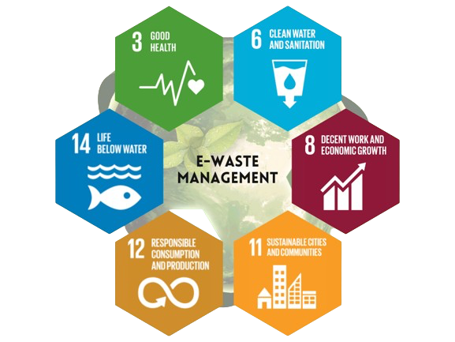

Welcome to our e-waste management platform, where sustainability meets technology. At TechWaste solutions, we are committed to revolutionizing the way electronic waste is handled and recycled. With the ever-accelerating pace of technological innovation, the disposal of electronic devices has become a pressing global concern. Our mission is to provide individuals and businesses with a convenient and eco-friendly solution to responsibly dispose of their electronic waste. By leveraging cutting-edge recycling processes and promoting a circular economy model, we strive to minimize the environmental impact of e-waste while maximizing the recovery of valuable resources. Join us in our journey towards a cleaner, greener future.
__________________________________________________________________________________________
Effective e-waste management is intricately linked to several Sustainable Development Goals (SDGs) outlined by the United Nations. By responsibly recycling electronic devices, we contribute to Goal 12 (Responsible Consumption and Production) by reducing the environmental impact of electronic waste and promoting sustainable practices. Additionally, proper e-waste management supports Goal 13 (Climate Action) by minimizing greenhouse gas emissions and conserving valuable resources through recycling. Furthermore, by extending the lifespan of electronic products and recovering precious materials, we contribute to Goal 8 (Decent Work and Economic Growth) by fostering job creation and economic opportunities in the recycling industry. Through our commitment to e-waste management, we actively participate in achieving these global goals while promoting a cleaner, greener future for all.